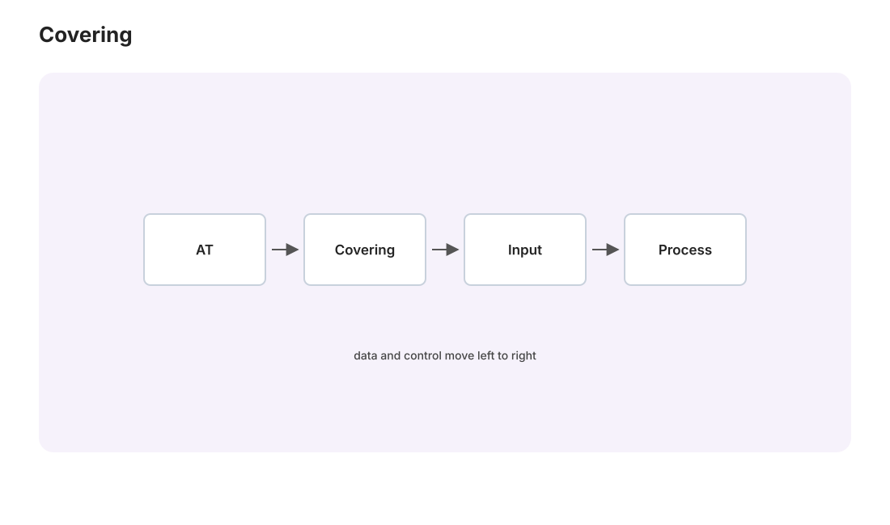

代数拓扑 II · 覆盖空间与 van Kampen 定理
对标：Hatcher §1.3、§1.2 ｜ 前置：at-01、抽代 I–II 两台发动机：覆盖空间理论——"空间的多层版本"与基本群的子群一一对应（结构与抽代 II 的 Galois 对应惊人平行——不是修辞，是范畴级的同型）；van Kampen 定理——把空间拆块算 \(\pi_1\) 的分治引擎。

1. 覆盖空间
定义 \(p: \tilde X \to X\) 是覆盖：每点有"均匀覆盖"邻域 \(U\)（\(p^{-1}(U)\) = 若干不相交开片、各自同胚映到 \(U\)——"层层叠叠的煎饼"）。原型：\(\mathbb{R} \to S^1\)（无穷层螺旋，at-01）、\(S^1 \xrightarrow{z^n} S^1\)（\(n\) 层）、\(S^n \to \mathbb{RP}^n\)（双层——射影空间的标准双覆盖）。
提升三定理【骨架，at-01 论证的一般化】：道路唯一提升；同伦唯一提升；一般提升判据——\(f: Y \to X\) 可提升 ⟺ \(f_*\pi_1(Y) \subseteq p_*\pi_1(\tilde X)\)（"回路兜得开才上得去"——障碍完全由基本群表达：函子性哲学的胜利）。
定理（Galois 对应，拓扑版） 良好空间（连通、局部良好）上：
覆盖的层数 = 指数 \([\pi_1 : H]\)；正规覆盖 ↔ 正规子群，其甲板变换群（deck transformations）\(\cong \pi_1(X)/H\)；万有覆盖（单连通的那层，存在性【骨架:同伦类当点造空间】）↔ 平凡子群，甲板群 \(\cong \pi_1(X)\) 整个。
与 Galois 理论的对表（抽代 II §3 并排放）：
| 拓扑 | 代数 |
|---|---|
| 覆盖空间 | 域扩张 |
| 万有覆盖 | 代数闭包/分裂域 |
| 甲板变换群 | Galois 群 |
| 正规覆盖 ↔ 正规子群 | 正规扩张 ↔ 正规子群 |
同一个对应模式统治两个学科——Grothendieck 把它们统一成一个定理（étale 基本群【立牌远望】）；"结构的对称性分类结构的中间层"是这个模式的一句话内核。
2. van Kampen 定理
定理 \(X = U \cup V\)（开、各自与交都道路连通），则
（自由积 \(*\) = "两组生成元并置、无新交换律"——抽代 I 之外的新群构造；\(N\) = 由交上回路的两种表达 \(i_*(\gamma)j_*(\gamma)^{-1}\) 生成的正规子群——"接缝处的口径必须对齐"。） 【骨架】 满射：紧致性把任何回路切成交替落在 \(U/V\) 的小段、接缝点用交内道路连回基点；核的刻画：同伦方块细分后逐格分析（Hatcher 的两页格子论证——结构清晰簿记重，骨架级恰当）。\(\blacksquare\)
流水线验收：8 字形 = 两圆沿点并：交可缩 ⇒ \(\pi_1 = \mathbb{Z}*\mathbb{Z} = F_2\)（at-01 的欠条兑付——非交换基本群的正式出生）；\(S^n\ (n\geq2)\) = 两半球并（交 \(\simeq S^{n-1}\) 连通）⇒ 单连通（at-01 的"推离一点"论证的正规版）；亏格 \(g\) 曲面：一个 \(4g\) 边形粘合——\(\pi_1 = \langle a_1, b_1, \dots, a_g, b_g \mid \prod[a_i, b_i]\rangle\)（曲面的群论身份证：换位子之积为一——mfld/微分几何的曲面在代数里的名字）。
3. 群论红利（拓扑反哺代数）
定理（Nielsen–Schreier） 自由群的子群自由。 【骨架級证明——拓扑三行】 自由群 = 图（8字形及推广）的 \(\pi_1\)；子群 ↔ 覆盖空间（§1 对应）；图的覆盖还是图；图同伦等价于一束圆（收缩生成树）⇒ 其 \(\pi_1\) 自由。\(\blacksquare\) ——纯代数陈述、代数证明冗长、拓扑证明三行："翻译到几何再算"的经典胜利（与"用分析证代数基本定理"对称的方向：学科之间的套利）。
4. 练习与要点
例 1（对应的实感） \(\pi_1(S^1) = \mathbb{Z}\) 的子群 \(n\mathbb{Z}\) ↔ 覆盖 \(z^n: S^1 \to S^1\)（\(n\) 层）；平凡子群 ↔ \(\mathbb{R}\)（万有覆盖）——整数的子群格被"楼梯与螺旋"逐层实现：Galois 对应拓扑版的最小完整例。
例 2（van Kampen 上手） 计算平环/两点去掉的平面：\(\mathbb{R}^2\setminus\{p,q\} \simeq\) 8 字形 ⇒ \(\pi_1 = F_2\)——"两个洞的绕法不交换"（绕 \(p\) 再绕 \(q\) ≠ 反序：亲手画同伦障碍）。
例 3（RP² 的双覆盖读法） \(S^2 \to \mathbb{RP}^2\) 双层 ⇒ \(\pi_1(\mathbb{RP}^2) = \mathbb{Z}/2\)——"绕两圈等于没绕"的空间（腰带翻转 720° 回原位的 Dirac belt trick；自旋 1/2 的拓扑背景【立牌】）。\(\blacksquare\)
收官页：同调——把"数洞"推广到所有维度：单纯同调的计算、Brouwer 高维版与 Euler 示性数的统一。